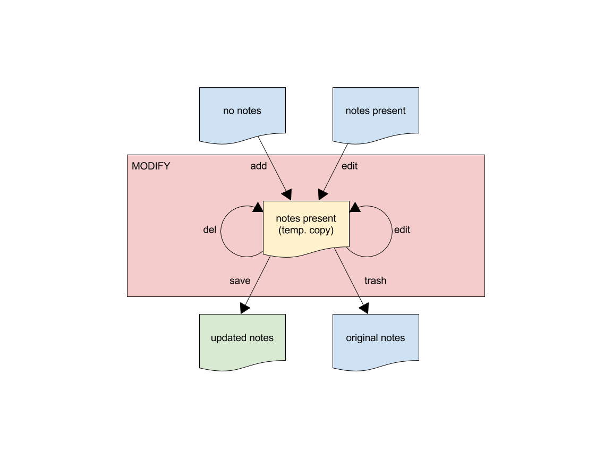

Annotating EMDB-SFF Segmentations
Contents
Introduction
Annotation of EMDB-SFF segmentations is the second core function of sfftk.
Here we outline how to perform annotations of EMDB-SFF segmentations via the
command-line.
Synopsis
Annotation is performed using the notes utility that is accessed with the
notes subcommand.
sff notes
usage: sff notes [-h] EMDB-SFF annotation tools ...
The EMDB-SFF Annotation Toolkit
optional arguments:
-h, --help show this help message and exit
Annotation tools:
The EMDB-SFF Annotation Toolkit provides the following tools:
EMDB-SFF annotation tools
search search for terms by labels
list list available annotations
show show an annotation by ID
add add new annotations
edit edit existing annotations
del delete existing annotations
copy copy notes across segments within the same EMDB-SFF file
clear clear notes in an EMDB-SFF file
merge merge notes from two EMDB-SFF files
save write all changes made since the last 'save' action
trash discard all changes made since the last the edit action (add, edit, del)
Annotation Levels: Global vs. Segment Notes
Annotations can be added at the segmentation (global) or individual segment level.
sfftk distinguishes between both levels of annotations. Global notes are
useful for terms that describe the segmentation as a whole such as the
species, the tissue type, disease state and such global references. Segments
notes refer to individual segments which may be constituted of multiple
biological entities of interest. Given the segment relationship specified by
parent_id to segment_id, a hierarchy of segments may also be annotated.
Simply add notes to the segment whose ID you are targetting.
Operations: Find, View, Modify
There are three main operations that a user can perform using the notes subcommand.
Find notes from a resource; if no resource is specified the Ontology Lookup Service (OLS) hosted at EMBL-EBI;
View notes present in an EMDB-SFF file;
Modify notes in an EMDB-SFF file.
States: FIND, VIEW, MODIFY
Correspondingly, using the notes subcommand puts the user in one of three states: the FIND state, the VIEW state and the MODIFY state. These will be indicated by the colour of the text on the screen.
CYAN indicates the
VIEW STATEi.e. that no modifications have been made to the EMDB-SFF fileYELLOW indicates the
FIND STATEi.e. search for terms from OLS, andGREEN indicates the
MODIFY STATEi.e. that a file is currently being edited.
Note
Viewing the contents of an EMDB-SFF file in the MODIFY STATE will also appear in green even if a view
command is invoked.
The full listing of sub-subcommands organised by operation are:
Find
search
View
list
show
Modify
add
edit
copy
clear
merge
del
save
trash
We will look at each of these in turn.
Quick Start
Finding Notes
The search sub-subcommand displays results from searching EMBL-EBI’s Ontology Lookup Service (OLS) by default. As described in States, the terminal text is coloured yellow.
sff notes search
sff notes search -h
sff notes search --help
display available options.
sff notes search
usage: sff notes search [-h] [-p CONFIG_PATH] [-b]
[-R {ols,go,emdb,uniprot,pdb,europepmc,empiar}]
[--start START] [--rows ROWS] [-O ONTOLOGY] [-x] [-o]
[-L] [-l]
[search_term]
Search ontologies for annotation by text labels
positional arguments:
search_term the term to search; add quotes if spaces are included
optional arguments:
-h, --help show this help message and exit
-p CONFIG_PATH, --config-path CONFIG_PATH
path to configs file
-b, --shipped-configs
use shipped configs only if config path and user
configs fail [default: False]
-R {ols,go,emdb,uniprot,pdb,europepmc,empiar}, --resource {ols,go,emdb,uniprot,pdb,europepmc,empiar}
the resource to search for terms or accessions; other
valid options are ['ols', 'go', 'emdb', 'uniprot',
'pdb', 'europepmc', 'empiar'] [default: ols]
--start START start index [default: 1]
--rows ROWS number of rows [default: 10]
EBI Ontology Lookup Service (OLS):
The Ontology Lookup Service (OLS) is a repository for biomedical
ontologies that aims to provide a single point of access to the latest
ontology versions. You can use the following options to modify your search
against OLS by ensuring that the -R/--resource flag is set to 'ols'
(default).
-O ONTOLOGY, --ontology ONTOLOGY
the ontology to search [default: None]
-x, --exact exact matches? [default: False]
-o, --obsoletes include obsoletes? [default: False]
-L, --list-ontologies
list available ontologies [default: False]
-l, --short-list-ontologies
short list of available ontologies [default: False]
Specifying Search Terms
For single worded searches enter the term with or without quotes. Multi-word terms must be quoted to prevent splitting them.
# single word term
sff notes search mitochondria
sff notes search ‘mitochondria’
sff notes search “mitochondria”
# multi-word term
sff notes search ‘fragment mitochondria’
The search results are displayed as a table with the following columns:
index
label of the result term
resource
url refers to a link by which the term in the ontology may be accessed
accession of the result term
description is free text describing the term, and
Specifying The Resource To Search
By default all searches are carried out against the EBI Ontology Lookup Service (OLS).
In addition to the OLS users can also search the follow resources for accessions to use for annotation:
The -R/--resource flag is used to specify the desired resource to search, which takes a string arguments as follows:
ols(default) will search EBI OLS;gowill search EBI OLS restricted to GO terms;emdbwill search the EMDB;pdbwill search PDB;uniprotwill search UniProt;europepmcwill search EuropePMC;empiarwill search EMPIAR.
For example, to search for mitochondria in EMDB the user would type one of the following:
sff notes search -R emdb "mitochodria"
sff notes search --resource emdb "mitochondria"
Specifying The Ontology To Search
This only applies to searches against the EBI Ontology Lookup Service (the default resource to search or -R/--resource ols).
sff notes search -O <resource> “<term>”
sff notes search --ontology <resource> “<term>”
See Listing Available Ontologies on how to get an ontology to search.
Performing Exact Searches
Exact searches only return results matching the search term exactly.
sff notes search -x “<term>”
sff notes search --exact “<term>”
Including Obsolete Terms
Some terms are retired and are excluded by default. They can be included using
the -o/--obsoletes flag.
sff notes search -o “<term>”
sff notes search --obsoletes “<term>”
Listing Available Ontologies
sff notes search -L “term”
sff notes search --list-ontologies “term”
By default this provides a multi-line result for each ontology consisting of the namespace (also called ID space), preferred prefix, title, description, homepage, the ontology ID, and version of the ontology.
Short Listing Of Available Ontologies
Alternatively, a simple table result can be displayed using the
-l/--short-list-ontologies flag which displays only two columns:
namespace and description.
sff notes search -l “term”
sff notes search --short-list-ontologies “term”
Traversing Searching Results
By default, sff notes search only shows the first page of results. Quite
often, there will be more than one page of results. This will be evident from
the last line of the results:
Showing: 1 to 10 of 139 results found
Specifying The Start Result
The user can specify the result index at which results should be displayed
using the --start flag.
sff notes search -s 1 “<term>”
sff notes search --start 1 “<term>”
Specifying The Number Of Rows To Display
More results can be display using the --rows flag.
sff notes search -r 11 “<term>”
sff notes search --rows 11 “<term>”
Entering invalid values for --start and --rows raise
ValueError exceptions.
Viewing Notes
sfftk includes utilities to view annotations (notes) included in EMDB-SFF
files.
Listing All Notes
Listing all notes is performed by running
sff notes list
usage: sff notes list [-h] [-H] [-p CONFIG_PATH] [-b] [-l] [-D] [-r] [-I] [-v] sff_file
List all available annotations present in an EMDB-SFF file
positional arguments:
sff_file path (rel/abs) to an EMDB-SFF file
optional arguments:
-h, --help show this help message and exit
-H, --header show EMDB-SFF header (global) attributes [default: False]
-p CONFIG_PATH, --config-path CONFIG_PATH
path to configs file
-b, --shipped-configs
use shipped configs only if config path and user configs fail [default: False]
-l, --long-format only show segment ID and description (if present) [default: False]
-D, --sort-by-name sort listings by segment name [default: False (sorts by ID)]
-r, --reverse reverse the sort order [default: False]
-I, --list-ids only list the IDs for segments one per line [default: False]
-v, --verbose verbose output
The sff notes list sub-command only lists a summary table of notes
available for each segment.
sff notes list file.sff
sff notes list file.hff
sff notes list file.json
The default output is structured as follows:
Status information
******************
Segment metatdata
Here is an example:
**************************************************************************************************************
id par_id name::description #inst #ext_ref colour
--------------------------------------------------------------------------------------------------------------
9764 0 GroEL::GroEL 1 7 (0.8, 0.96, 0.4, 1.0)
9814 0 GroEL::GroEL 1 7 (0.8, 0.48, 0.88, 1.0)
9815 0 GroEL::GroEL 1 7 (1.0, 0.412, 0.706, 1.0)
9840 0 GroEL::GroEL 1 7 (0.16, 0.84, 0.48, 1.0)
9859 0 GroEL::GroEL 1 7 (0.92, 0.84, 0.96, 1.0)
9893 0 GroEL::GroEL 1 7 (0.0, 0.84, 0.76, 1.0)
9897 0 GroEL::GroEL 1 7 (0.0, 0.84, 0.76, 1.0)
9911 0 GroEL::GroEL 1 7 (0.92, 0.84, 0.96, 1.0)
9914 0 GroEL::GroEL 1 7 (0.16, 0.84, 0.48, 1.0)
9952 0 GroEL::GroEL 1 7 (1.0, 0.412, 0.706, 1.0)
9955 0 GroEL::GroEL 1 7 (0.8, 0.96, 0.4, 1.0)
9956 0 GroEL::GroEL 1 7 (0.8, 0.48, 0.88, 1.0)
It has the following columns:
id: segment ID
par_idd: segment ID for the parent ID;
description: a descriptive name for the segment, which provides a useful starting point when searching for annotation terms;
#inst: the number of instances of the segment;
#ex_ref: the number of external references present;
colour: the colour of the segment in normalised RGBA.
where the first line provides some status information about the current listing. Status messages will become much more important when we look at modifying notes in EMDB-SFF files. Status messages begin with a timestamp. Following status messages is the EMDB-SFF header information which specifies the schema version, the name of the segmentation (‘STL Segmentation’), software information including processing details, the primary descriptor (meshList in this case) and additional details on this segmentation. A row asterisks then divides the metadata from the segment data where one row per segment provides the segment_id, parentID, description, number of instances, number of external references, number of complexes, number of macromolecules, and RGBA colour of the segment. When modifying notes these values change.
Long Format
To view the list of notes by segment in long format (much more detail) use
the -l/--long-format flag. This can be done with or without the header
(-H/--header flag).
sff notes list -l file.sff
sff notes list --long-format file.sff
having the same
Status information
==================
Segment metatdata
structure except now that the Segment metadata section has much more detail.
**************************************************************************************************************
ID: 9764
PARENT ID: 0
Segment Type: three_d_volume
--------------------------------------------------------------------------------------------------------------
Name:
GroEL
Description:
GroEL
Number of instances:
1
--------------------------------------------------------------------------------------------------------------
External references:
# resource url accession L D
------------------------------------------------------------------------------------------------------
0: ogg http://purl.obolibrary.org/obo/OGG_3000881348 OGG_3000881348 Y Y
1: ogg http://purl.obolibrary.org/obo/OGG_3001198820 OGG_3001198820 Y Y
2: vo http://purl.obolibrary.org/obo/VO_0010998 VO_0010998 Y Y
3: vo http://purl.obolibrary.org/obo/VO_0011075 VO_0011075 Y Y
4: pdro http://purl.obolibrary.org/obo/VO_0010998 VO_0010998 Y Y
5: pdro http://purl.obolibrary.org/obo/VO_0011075 VO_0011075 Y Y
6: omit http://purl.obolibrary.org/obo/OMIT_0001676 OMIT_0001676 Y Y
--------------------------------------------------------------------------------------------------------------
Colour:
(0.800000011920929, 0.959999978542328, 0.400000005960464, 1.0)
**************************************************************************************************************
ID: 9814
PARENT ID: 0
Segment Type: three_d_volume
--------------------------------------------------------------------------------------------------------------
Name:
GroEL
Description:
GroEL
Number of instances:
1
--------------------------------------------------------------------------------------------------------------
External references:
# resource url accession L D
------------------------------------------------------------------------------------------------------
0: ogg http://purl.obolibrary.org/obo/OGG_3000881348 OGG_3000881348 Y Y
1: ogg http://purl.obolibrary.org/obo/OGG_3001198820 OGG_3001198820 Y Y
2: vo http://purl.obolibrary.org/obo/VO_0010998 VO_0010998 Y Y
3: vo http://purl.obolibrary.org/obo/VO_0011075 VO_0011075 Y Y
4: pdro http://purl.obolibrary.org/obo/VO_0010998 VO_0010998 Y Y
5: pdro http://purl.obolibrary.org/obo/VO_0011075 VO_0011075 Y Y
6: omit http://purl.obolibrary.org/obo/OMIT_0001676 OMIT_0001676 Y Y
--------------------------------------------------------------------------------------------------------------
Colour:
(0.800000011920929, 0.479999989271164, 0.879999995231628, 1.0)
**************************************************************************************************************
... truncated ...
Including Segmentation Metadata
By default, segmentation metadata (name, software, global notes, file path,
details) are not included when listing or showing notes. The -H/--header
flag includes this.
sff notes list -H file.sff
sff notes list --header file.sff
The output has the following structure:
Status information
==================
EMDB-SFF metadata
******************
Segment metatdata
And here’s an example:
==============================================================================================================
EMDB-SFF v.0.8.0.dev1
--------------------------------------------------------------------------------------------------------------
Segmentation name:
Segger Segmentation
Segmentation software:
0 segger/2
proc/det:
--------------------------------------------------------------------------------------------------------------
Primary descriptor [three_d_volume|mesh_list|shape_primitive_list]:
three_d_volume
--------------------------------------------------------------------------------------------------------------
Transforms:
--------------------------------------------------------------------------------------------------------------
Bounding box (xmin,xmax,ymin,ymax,zmin,zmax):
(0.0, None, 0.0, None, 0.0, None)
--------------------------------------------------------------------------------------------------------------
Global external references: (L = label present; D = description present)
# resource url accession L D
------------------------------------------------------------------------------------------------------
0: ncit http://purl.obolibrary.org/obo/NCIT_C14206 NCIT_C14206 Y Y
1: dron http://purl.obolibrary.org/obo/DRON_00018778 DRON_00018778 Y Y
2: omit http://purl.obolibrary.org/obo/OMIT_0006157 OMIT_0006157 Y Y
3: ncbitaxon http://purl.obolibrary.org/obo/NCBITaxon_562 NCBITaxon_562 Y Y
--------------------------------------------------------------------------------------------------------------
Segmentation details:
-*- NOT DEFINED -*-
**************************************************************************************************************
id par_id name::description #inst #ext_ref colour
--------------------------------------------------------------------------------------------------------------
9764 0 GroEL::GroEL 1 7 (0.8, 0.96, 0.4, 1.0)
9814 0 GroEL::GroEL 1 7 (0.8, 0.48, 0.88, 1.0)
9815 0 GroEL::GroEL 1 7 (1.0, 0.412, 0.706, 1.0)
9840 0 GroEL::GroEL 1 7 (0.16, 0.84, 0.48, 1.0)
9859 0 GroEL::GroEL 1 7 (0.92, 0.84, 0.96, 1.0)
9893 0 GroEL::GroEL 1 7 (0.0, 0.84, 0.76, 1.0)
9897 0 GroEL::GroEL 1 7 (0.0, 0.84, 0.76, 1.0)
9911 0 GroEL::GroEL 1 7 (0.92, 0.84, 0.96, 1.0)
9914 0 GroEL::GroEL 1 7 (0.16, 0.84, 0.48, 1.0)
9952 0 GroEL::GroEL 1 7 (1.0, 0.412, 0.706, 1.0)
9955 0 GroEL::GroEL 1 7 (0.8, 0.96, 0.4, 1.0)
9956 0 GroEL::GroEL 1 7 (0.8, 0.48, 0.88, 1.0)
Sorting Notes By Description
Notes are sorted by the index (first column) by default. However, the user can sort notes by description (third column) using the -D/--sort-by-description flag.
sff notes list -D file.json
sff notes list --sort-by-description file.json
**************************************************************************************************************
id par_id name::description #inst #ext_ref colour
--------------------------------------------------------------------------------------------------------------
9764 0 MCM4::DNA replication licensing facto... 1 2 (0.8, 0.96, 0.4, 1.0)
9814 0 MCM3::DNA replication licensing facto... 1 2 (0.8, 0.48, 0.88, 1.0)
9815 0 MCM6::DNA replication licensing facto... 1 2 (1.0, 0.412, 0.706, 1.0)
9840 0 MCM2::DNA replication licensing facto... 1 2 (0.16, 0.84, 0.48, 1.0)
9859 0 MCM7::DNA replication licensing facto... 1 2 (0.92, 0.84, 0.96, 1.0)
9893 0 MCM5::Minichromosome maintenance prot... 1 2 (0.0, 0.84, 0.76, 1.0)
9897 0 MCM5::Minichromosome maintenance prot... 1 2 (0.0, 0.84, 0.76, 1.0)
9911 0 MCM7::DNA replication licensing facto... 1 2 (0.92, 0.84, 0.96, 1.0)
9914 0 MCM2::DNA replication licensing facto... 1 2 (0.16, 0.84, 0.48, 1.0)
9952 0 MCM6::DNA replication licensing facto... 1 2 (1.0, 0.412, 0.706, 1.0)
9955 0 MCM4::DNA replication licensing facto... 1 2 (0.8, 0.96, 0.4, 1.0)
9956 0 MCM3::DNA replication licensing facto... 1 2 (0.8, 0.48, 0.88, 1.0)
becomes
**************************************************************************************************************
id par_id name::description #inst #ext_ref colour
--------------------------------------------------------------------------------------------------------------
9840 0 MCM2::DNA replication licensing facto... 1 2 (0.16, 0.84, 0.48, 1.0)
9914 0 MCM2::DNA replication licensing facto... 1 2 (0.16, 0.84, 0.48, 1.0)
9814 0 MCM3::DNA replication licensing facto... 1 2 (0.8, 0.48, 0.88, 1.0)
9956 0 MCM3::DNA replication licensing facto... 1 2 (0.8, 0.48, 0.88, 1.0)
9764 0 MCM4::DNA replication licensing facto... 1 2 (0.8, 0.96, 0.4, 1.0)
9955 0 MCM4::DNA replication licensing facto... 1 2 (0.8, 0.96, 0.4, 1.0)
9893 0 MCM5::Minichromosome maintenance prot... 1 2 (0.0, 0.84, 0.76, 1.0)
9897 0 MCM5::Minichromosome maintenance prot... 1 2 (0.0, 0.84, 0.76, 1.0)
9815 0 MCM6::DNA replication licensing facto... 1 2 (1.0, 0.412, 0.706, 1.0)
9952 0 MCM6::DNA replication licensing facto... 1 2 (1.0, 0.412, 0.706, 1.0)
9859 0 MCM7::DNA replication licensing facto... 1 2 (0.92, 0.84, 0.96, 1.0)
9911 0 MCM7::DNA replication licensing facto... 1 2 (0.92, 0.84, 0.96, 1.0)
Note that descriptions longer than 40 characters are truncated and terminated
with an ellipsis (...) but the full description is visible in long format.
Reverse Sorting
Alternative, sorting can be reversed using the -r/--reverse flag. This
applies to both sorting by index or by description.
Reverse sorting by index:
sff notes list -r file.json
sff notes list --reverse file.json
For the above, this becomes:
**************************************************************************************************************
id par_id name::description #inst #ext_ref colour
--------------------------------------------------------------------------------------------------------------
9956 0 MCM3::DNA replication licensing facto... 1 2 (0.8, 0.48, 0.88, 1.0)
9955 0 MCM4::DNA replication licensing facto... 1 2 (0.8, 0.96, 0.4, 1.0)
9952 0 MCM6::DNA replication licensing facto... 1 2 (1.0, 0.412, 0.706, 1.0)
9914 0 MCM2::DNA replication licensing facto... 1 2 (0.16, 0.84, 0.48, 1.0)
9911 0 MCM7::DNA replication licensing facto... 1 2 (0.92, 0.84, 0.96, 1.0)
9897 0 MCM5::Minichromosome maintenance prot... 1 2 (0.0, 0.84, 0.76, 1.0)
9893 0 MCM5::Minichromosome maintenance prot... 1 2 (0.0, 0.84, 0.76, 1.0)
9859 0 MCM7::DNA replication licensing facto... 1 2 (0.92, 0.84, 0.96, 1.0)
9840 0 MCM2::DNA replication licensing facto... 1 2 (0.16, 0.84, 0.48, 1.0)
9815 0 MCM6::DNA replication licensing facto... 1 2 (1.0, 0.412, 0.706, 1.0)
9814 0 MCM3::DNA replication licensing facto... 1 2 (0.8, 0.48, 0.88, 1.0)
9764 0 MCM4::DNA replication licensing facto... 1 2 (0.8, 0.96, 0.4, 1.0)
Reverse sorting by description
sff notes list -r -D file.json
sff notes list --reverse --sort-by-description file.json
leading to
**************************************************************************************************************
id par_id name::description #inst #ext_ref colour
--------------------------------------------------------------------------------------------------------------
9859 0 MCM7::DNA replication licensing facto... 1 2 (0.92, 0.84, 0.96, 1.0)
9911 0 MCM7::DNA replication licensing facto... 1 2 (0.92, 0.84, 0.96, 1.0)
9815 0 MCM6::DNA replication licensing facto... 1 2 (1.0, 0.412, 0.706, 1.0)
9952 0 MCM6::DNA replication licensing facto... 1 2 (1.0, 0.412, 0.706, 1.0)
9893 0 MCM5::Minichromosome maintenance prot... 1 2 (0.0, 0.84, 0.76, 1.0)
9897 0 MCM5::Minichromosome maintenance prot... 1 2 (0.0, 0.84, 0.76, 1.0)
9764 0 MCM4::DNA replication licensing facto... 1 2 (0.8, 0.96, 0.4, 1.0)
9955 0 MCM4::DNA replication licensing facto... 1 2 (0.8, 0.96, 0.4, 1.0)
9814 0 MCM3::DNA replication licensing facto... 1 2 (0.8, 0.48, 0.88, 1.0)
9956 0 MCM3::DNA replication licensing facto... 1 2 (0.8, 0.48, 0.88, 1.0)
9840 0 MCM2::DNA replication licensing facto... 1 2 (0.16, 0.84, 0.48, 1.0)
9914 0 MCM2::DNA replication licensing facto... 1 2 (0.16, 0.84, 0.48, 1.0)
Viewing Segment IDs Only
To view the segment IDs only write:
sff notes list -I file.sff
9764
9814
9815
9840
9859
9893
9897
9911
9914
9952
9955
9956
which are sorted in ascending order. These can be reversed using the
-r/--reverse flag.
sff notes list -I -r file.sff
9956
9955
9952
9914
9911
9897
9893
9859
9840
9815
9814
9764
Showing Notes In One Or More Segments
To show annotations relating to one or several (or all) segments type
sff notes show
usage: sff notes show [-h] [-p CONFIG_PATH] [-b] [-H] [-l] [-v] [-i SEGMENT_ID] sff_file
Show a specific annotations by ID present in an EMDB-SFF file
positional arguments:
sff_file path (rel/abs) to an EMDB-SFF file
optional arguments:
-h, --help show this help message and exit
-p CONFIG_PATH, --config-path CONFIG_PATH
path to configs file
-b, --shipped-configs
use shipped configs only if config path and user configs fail [default: False]
-H, --header show EMDB-SFF header (global) attributes [default: False]
-l, --long-format only show segment ID and description (if present) [default: False]
-v, --verbose verbose output
-i SEGMENT_ID, --segment-id SEGMENT_ID
refer to a segment by its ID; pass more than one ID as a comma-separated list with no spaces e.g. 'id1,id2,...,idN'
As describe in `States <#states-find-view-modify>`__, the teminal text colour
when viewing is **WHITE**.
Listing notes from EMDB-SFF files with many segments could clutter the screen.
The user can switch between listing all segments to finding segment IDs of
interest then displaying one or more segments of interest using the ``sff
notes show`` sub-subcommand. Therefore, this takes an extra parameter
``-i/--segment-id`` which takes either one ID or a sequence of IDs separated
only by commas (``,``).
Show one segment:
sff notes show -i <int> file.json
sff notes show --segment-id <int> file.json
For more than one:
sff notes show -i <int>,<int>,<int> file.json
sff notes show --segment-id <int>,<int>,<int> file.json
Example:
**************************************************************************************************************
id par_id name::description #inst #ext_ref colour
--------------------------------------------------------------------------------------------------------------
9814 0 MCM3::DNA replication licensing facto... 1 2 (0.8, 0.48, 0.88, 1.0)
9911 0 MCM7::DNA replication licensing facto... 1 2 (0.92, 0.84, 0.96, 1.0)
Note that there are NO SPACES between the sequence of segment IDs. As with
listing notes, the user can show notes in long format using the
-l/--long-format flag.
sff notes show -i <int> -l file.json
sff notes --segment-id <int> --long-format file.json
Example:
**************************************************************************************************************
ID: 9814
PARENT ID: 0
Segment Type: None
--------------------------------------------------------------------------------------------------------------
Name:
MCM3
Description:
DNA replication licensing factor MCM3
Number of instances:
1
--------------------------------------------------------------------------------------------------------------
External references:
# resource url accession L D
------------------------------------------------------------------------------------------------------
0: pr http://purl.obolibrary.org/obo/PR_P24279 PR_P24279 Y Y
1: uniprot http://www.uniprot.org/uniprot/P24279 P24279 Y Y
--------------------------------------------------------------------------------------------------------------
Colour:
(0.800000011920929, 0.479999989271164, 0.879999995231628, 1.0)
**************************************************************************************************************
ID: 9911
PARENT ID: 0
Segment Type: None
--------------------------------------------------------------------------------------------------------------
Name:
MCM7
Description:
DNA replication licensing factor MCM7
Number of instances:
1
--------------------------------------------------------------------------------------------------------------
External references:
# resource url accession L D
------------------------------------------------------------------------------------------------------
0: pr http://purl.obolibrary.org/obo/PR_P38132 PR_P38132 Y Y
1: uniprot http://www.uniprot.org/uniprot/P38132 P38132 Y Y
--------------------------------------------------------------------------------------------------------------
Colour:
(0.920000016689301, 0.839999973773956, 0.959999978542328, 1.0)
Viewing Segmentation Metadata Only
As specified for sff notes list, using the -H/--header flag with
sff notes show will display the header (segmentation metadata) only.
sff notes show -H file.json
sff notes show --header file.json
Example:
==============================================================================================================
EMDB-SFF v.0.8.0.dev1
--------------------------------------------------------------------------------------------------------------
Segmentation name:
Segger Segmentation
Segmentation software:
0 segger/2
proc/det: watershed algorithm applied
1 Amira/2019.1
proc/det: mesh computed over the surface
2 IMOD/v3.8
proc/det: mesh reduction and cleaning
--------------------------------------------------------------------------------------------------------------
Primary descriptor [three_d_volume|mesh_list|shape_primitive_list]:
three_d_volume
--------------------------------------------------------------------------------------------------------------
Transforms:
--------------------------------------------------------------------------------------------------------------
Bounding box (xmin,xmax,ymin,ymax,zmin,zmax):
(0.0, None, 0.0, None, 0.0, None)
--------------------------------------------------------------------------------------------------------------
Global external references: (L = label present; D = description present)
# resource url accession L D
------------------------------------------------------------------------------------------------------
0: ncbitaxon http://purl.obolibrary.org/obo/NCBITaxon_559292 NCBITaxon_559292 Y Y
1: pdb http://www.ebi.ac.uk/pdbe/entry/pdb/3ja8 3ja8 Y Y
--------------------------------------------------------------------------------------------------------------
Segmentation details:
DNA replication in eukaryotes is strictly regulated by several mechanisms. A central step in this
replication is the assembly of the heterohexameric minichromosome maintenance (MCM2-7) helicase complex at
replication origins during G1 phase as an inactive double hexamer. Here, using cryo-electron microscopy, we
report a near-atomic structure of the MCM2-7 double hexamer purified from yeast G1 chromatin. Our structure
shows that two single hexamers, arranged in a tilted and twisted fashion through interdigitated amino-terminal
domain interactions, form a kinked central channel. Four constricted rings consisting of conserved interior
β-hairpins from the two single hexamers create a narrow passageway that tightly fits duplex DNA. This narrow
passageway, reinforced by the offset of the two single hexamers at the double hexamer interface, is flanked by
two pairs of gate-forming subunits, MCM2 and MCM5. These unusual features of the twisted and tilted single
hexamers suggest a concerted mechanism for the melting of origin DNA that requires structural deformation of
the intervening DNA.
Modifying Notes
Modifying notes is slightly more complicated than the read-only activities of finding and viewing described above. It involves making changes to the annotation sections (biological_annotation: name, description, number_of_instances, and external_references) as well as the transform list of the segmentation and individual segments of interest.
Temporary File
In order to avoid destroying the EMDB-SFF file to be modified, sfftk makes a
temporary copy to be used throughout the modification process. Once the user
is satisfied with the annotation the temporary file should be saved.
Alternatively, the user can discard all changes by trashing the annotations
in the temporary file then starting again.
Note
A Note About EMDB-SFF Formats
Any EMDB-SFF format (XML, HDF5, JSON) may be used for the temporary file. However, JSON is preferred because of the absence of geometrical data. XML and HDF5 can have voluminous geometrical data which can make the process of modifying an EMDB-SFF very slow.
The default format used is JSON.
You can modify the name and format of the temporary file using the config
command to modify the __TEMP_FILE option.
~$ sff config get __TEMP_FILE
Mon Jan 22 16:49:59 2018 Reading configs from /Users/pkorir/.sfftk/sff.conf
Mon Jan 22 16:49:59 2018 Getting config __TEMP_FILE...
./temp-annotated.json
to view current settings. As for convert, the extension of the temporary
file determines the output form.
~$ sff config set __TEMP_FILE ./my-annotations.json
Mon Jan 22 16:49:27 2018 Reading configs from /Users/pkorir/.sfftk/sff.conf
Mon Jan 22 16:49:27 2018 Setting config __TEMP_FILE to value ./my-annotations.json...
~$ sff config get -all
Mon Jan 22 16:49:31 2018 Reading configs from /Users/pkorir/.sfftk/sff.conf
Mon Jan 22 16:49:31 2018 Listing all 3 configs...
__TEMP_FILE = ./my-annotations.json
__TEMP_FILE_REF = @
NAME = VALUE
Temporary File Shorthand
Once the user has entered the MODIFY state (by either running one of sff notes [add|edit|del|copy|clear|merge]) the user can refer to the temporary
file using a shorthand specified in the configs.
The default shorthand is the ‘at’ symbol (@).
# add a description (assuming none exists)
sff notes add -i 1 -n 'a name' -d ‘some description’ file.sff
# user is now in MODIFY state
sff notes edit -i 1 -n 'another name' -d ‘another description’ @
This is useful if the file has a long name or is at a distant path.
sff notes add -i 1 -d ‘some description’ tomo_5_diff_change_3.3_pi_77_27_paul_publishes.json
sff notes edit -i 1 -d ‘another description’ @
or
sff notes add -i 1 -d ‘some description’ ~/experiments/files/tomograms/zebra_fish_20170312/masks_repeat_19_3.3_relion_2.0.json
sff notes edit -i 1 -d ‘some description’ @
The attentive reader will have noticed the option __TEMP_FILE_REF above.
Indeed this variable specifies the temporary file shorthand and can
be modifed as above.
Modify Sequence
The following diagram illustrates the sequence of steps to be carried out during modification. The names of the sub-subcommand next to arrows showing the modification that occurs.
Annotations may be added either to the segmentation (global) or to individual segments.
At the segmentation level one may add:
the name of the segmentation;
a list of the segmentation software used each having a:
name
version
processing_details
a list of transforms;
the segmentation’s details (description)
a list of global external references.
At the segment level there are several types of annotations that can be made:
the segment name;
the segment description;
the number of instances of the segment;
external references available in public archives
Adding Notes
Adding Global Notes (Segmentation)
Global notes are added using the sff notes add sub-command. The
following flags modify segmentation metadata and global external
references:
-N/--name: the name of the segmentation as a whole;-S/--software-name: the name of the software program that produced the segmentation;-T/--software-version: the version of the software used;-P/--software-processing-details: a quoted string outlining the processing details by which the segmentation was obtained;-X/--transform: a sequence of 12 floating points values specifying a transform; the first transform is designated the image-to-physical transform and is assumed to be how the segmentation gets projected into physical space during visualisation and analysis;-D/--details: a quoted string of additional details pertaining to this segmentation;-E/--external-reffor global or segment external references;
Each of the above will be demonstrated. The examples demonstrate the notes state before entering
the MODIFY STATE (explicitly specifying the filename) and after entering the
MODIFY STATE (using file shorthand e.g. @ used).
Here’s the help output for sff notes add:
sff notes add
usage: sff notes add [-h] [-p CONFIG_PATH] [-b]
[-E EXTERNAL_REF EXTERNAL_REF EXTERNAL_REF] [-v]
[-N NAME] [-S SOFTWARE_NAME] [-T SOFTWARE_VERSION]
[-P SOFTWARE_PROCESSING_DETAILS]
[-X TRANSFORM TRANSFORM TRANSFORM TRANSFORM TRANSFORM TRANSFORM TRANSFORM TRANSFORM TRANSFORM TRANSFORM TRANSFORM TRANSFORM]
[-D DETAILS] [-i SEGMENT_ID] [-n SEGMENT_NAME]
[-d DESCRIPTION] [-I NUMBER_OF_INSTANCES]
sff_file
Add a new annotation to an EMDB-SFF file
positional arguments:
sff_file path (rel/abs) to an EMDB-SFF file
optional arguments:
-h, --help show this help message and exit
-p CONFIG_PATH, --config-path CONFIG_PATH
path to configs file
-b, --shipped-configs
use shipped configs only if config path and user
configs fail [default: False]
-E EXTERNAL_REF EXTERNAL_REF EXTERNAL_REF, --external-ref EXTERNAL_REF EXTERNAL_REF EXTERNAL_REF
An external reference consists of three components:
the name of the external reference, a URL to the
particular external reference and the accession. If
you use the sff notes search utility these will
correspond to the resource, url and accession. The
following is a list of valid external references: ols,
go, emdb, uniprot, pdb, europepmc, empiar. You can
also specify multiple external reference arguments
e.g. sff notes add -i <int> -E r11 r12 r13 -E r21 r22
r23 file.json
-v, --verbose verbose output
add global notes:
add global attributes to an EMDB-SFF file
-N NAME, --name NAME the segmentation name
-S SOFTWARE_NAME, --software-name SOFTWARE_NAME
the name of the software used to create the
segmentation
-T SOFTWARE_VERSION, --software-version SOFTWARE_VERSION
the version of software used to create the
segmentation
-P SOFTWARE_PROCESSING_DETAILS, --software-processing-details SOFTWARE_PROCESSING_DETAILS
details of how the segmentation was processed
-X TRANSFORM TRANSFORM TRANSFORM TRANSFORM TRANSFORM TRANSFORM TRANSFORM TRANSFORM TRANSFORM TRANSFORM TRANSFORM TRANSFORM, --transform TRANSFORM TRANSFORM TRANSFORM TRANSFORM TRANSFORM TRANSFORM TRANSFORM TRANSFORM TRANSFORM TRANSFORM TRANSFORM TRANSFORM
twelve (12) floats to specify the 3x4 matrix; rows
first
-D DETAILS, --details DETAILS
populates <details>...</details> in the XML file
add segment notes:
add attributes to a single segment in an EMDB-SFF file
-i SEGMENT_ID, --segment-id SEGMENT_ID
refer to a segment by its ID
-n SEGMENT_NAME, --segment-name SEGMENT_NAME
the name of the segment
-d DESCRIPTION, --description DESCRIPTION
the description
-I NUMBER_OF_INSTANCES, --number-of-instances NUMBER_OF_INSTANCES
the number of instances
Adding A Segmentation Name
To be on the safe side use a quoted string to accommodate spaces. However, for single word values no quotes are required.
# general
sff notes add -N "My Best Segmentation" file.json # not in MODIFY state yet
sff notes add --name "My Worst Segmentation" @ # already in MODIFY state
# single word
sff notes add -N Mitochondria file.json
Adding The Software
The list of software applications may be extended using either -S/--software-name, -T/--software-version
or -P/--software-processing-details. Any call to sff notes add with any one of these three arguments
will result in a new software entity added to the list. If you would like to modify the list of software
entities in the list use sff notes edit or sff notes del as outlined below.
sff notes add -S IMOD -T v4.2.9 -P "contours defined" file.json # not in MODIFY state
sff notes add --software-name Amira --software-version 2019.1 @ # MODIFY state
Use quotes (single/double) to enter software processing details:
# not in MODIFY state
sff notes add -P "Density map was automatically segmented using the watershed algorithm on a HP Cluster with 200 nodes" file.json
# MODIFY state
sff notes add --software-processing-details "Threshold of 1.08" @
Add A Transform
To add a transform, use the -X/--transform argument followed by 12 floats. The 12 floats specify a 3x4 matrix
with the first 3x3 elements specifying scale and rotation parameters and the last column specifying translation
parameters. The values are entered from top-left to bottom-right.
# not in MODIFY state
# scale the segmentation by 2.0 then translated to (10.0, 20.0, 30.0)
sff notes add -X 2.0 0 0 10.0 0 2.0 0 20.0 0 0 2.0 30.0 file.json
# in MODIFY state
sff notes add -X 2.0 0 0 10.0 0 2.0 0 20.0 0 0 2.0 30.0 @
If the transform is implied by an MRC-like file then the output of sff view --transform --print-ssv file.map
will provide the 12 floats which can be embedded into the sff notes add -X call as shown below.
# note the backticks
sff notes add -X `sff view --transform --print-ssv file.map` file.json
Adding Segmentation Details
# not in MODIFY state
sff notes add -D "Specimen was irradiated with 5 lux of light then imaged vertically" file.json
# MODIFY state
sff notes add --details "All imaging was done at 17 K" @
Adding An External Reference (Global Or Segment)
The external references flag (-E/--external-ref) takes three arguments:
the
resource namewhere the reference may be found;the
permanent URLwhere more details may be found;the
accessioncode for the reference.
You can use multiple -E/--external-ref flags at once.
All of these may be obtained either from the OLS website of using the output of sff notes search ‘<term>’.
For example, suppose we ran
sff notes search 'mitochondria'
and obtain the following results:

and are interested in adding the second result as an external reference to a
segment. We note down the resource (go), url
(http://purl.obolibrary.org/obo/GO_0005739) and the accession
(GO:0005739) then use the following command:
# -E <resource> <url> <accession>
sff notes add -E go http://purl.obolibrary.org/obo/GO_0005739 GO:0005739 file.json
More examples:
# global (segmentation) notes
# not in MODIFY state
sff notes add -E ncbitaxon http://purl.obolibrary.org/obo/NCBITaxon_559292 NCBITaxon_559292 file.json
# MODIFY state
# more than one reference
sff notes add -E ncbitaxon http://purl.obolibrary.org/obo/NCBITaxon_559292 NCBITaxon_559292 -E pdb http://www.ebi.ac.uk/pdbe/entry/pdb/3ja8 3ja8 @
Adding Segment Notes
Notes are added using the sff notes add sub-subcommand but specifying the segment by ID using the
-i/--segment-id argument.
sff notes add -i <segment_id> [options] file.json
Adding A Segment Name
The -n/--segment-name flag takes a single argument or quoted string to name the segment.
sff notes add -i 9911 -n "Top-most segment" file.sff
sff notes add -i 9911 --segment-name "Top-most segment" file.sff
Adding A Segment Description
Use the -d/--description flag to add a description. Multi-word descriptions will need to be quoted.
sff notes add -i 9911 -d 'a very good description' file.sff
sff notes add --segment-id 9911 --description 'a very good description' file.sff
Adding The Number of Instances
sff notes add -i 9911 -I <int> file.json
sff notes add --segment-id 9911 --number-of-instances <int> file.json
Adding External References
sff notes add -i 9911 -E <resource> <url> <accession> file.json
or several at once using multiple -E/--external-ref flags:
sff notes add -i 9911 -E <resource> <url> <accession> -E <resource> <url> <accession> -E <resource> <url> <accession>file.json
# per-segment notes
sff notes add -i 9911 -E go http://purl.obolibrary.org/obo/GO_0005739 GO:0005739 file.json
sff notes add -i 9911 --external-ref go http://purl.obolibrary.org/obo/GO_0005739 GO:0005739 file.json
Editing Notes
Editing Global Notes (Segmentation)
Editing global notes is straightforward and works exactly like adding notes
for all items of metadata except external references. Where the entity to be modified is not a list, one can use
add and edit interchangeably for name, segment name, segment description, number of instances and details.
sff notes edit
usage: sff notes edit [-h] [-p CONFIG_PATH] [-b] [-e EXTERNAL_REF_ID]
[-E EXTERNAL_REF EXTERNAL_REF EXTERNAL_REF] [-v]
[-N NAME] [-s SOFTWARE_ID] [-S SOFTWARE_NAME]
[-T SOFTWARE_VERSION] [-P SOFTWARE_PROCESSING_DETAILS]
[-x TRANSFORM_ID]
[-X TRANSFORM TRANSFORM TRANSFORM TRANSFORM TRANSFORM TRANSFORM TRANSFORM TRANSFORM TRANSFORM TRANSFORM TRANSFORM TRANSFORM]
[-D DETAILS] [-i SEGMENT_ID] [-n SEGMENT_NAME]
[-d DESCRIPTION] [-I NUMBER_OF_INSTANCES]
sff_file
Edit an existing annotation to an EMDB-SFF file
positional arguments:
sff_file path (rel/abs) to an EMDB-SFF file
optional arguments:
-h, --help show this help message and exit
-p CONFIG_PATH, --config-path CONFIG_PATH
path to configs file
-b, --shipped-configs
use shipped configs only if config path and user
configs fail [default: False]
-e EXTERNAL_REF_ID, --external-ref-id EXTERNAL_REF_ID
the external reference ID as shown with the 'list'
command
-E EXTERNAL_REF EXTERNAL_REF EXTERNAL_REF, --external-ref EXTERNAL_REF EXTERNAL_REF EXTERNAL_REF
An external reference consists of three components:
the name of the external reference, a URL to the
particular external reference and the accession. If
you use the sff notes search utility these will
correspond to the resource, url and accession. The
following is a list of valid external references: ols,
go, emdb, uniprot, pdb, europepmc, empiar. You can
also specify multiple external reference arguments
e.g. sff notes add -i <int> -E r11 r12 r13 -E r21 r22
r23 file.json
-v, --verbose verbose output
edit global notes:
edit global attributes to an EMDB-SFF file
-N NAME, --name NAME the segmentation name
-s SOFTWARE_ID, --software-id SOFTWARE_ID
the software to edit
-S SOFTWARE_NAME, --software-name SOFTWARE_NAME
the name of the software used to create the
segmentation
-T SOFTWARE_VERSION, --software-version SOFTWARE_VERSION
the version of software used to create the
segmentation
-P SOFTWARE_PROCESSING_DETAILS, --software-processing-details SOFTWARE_PROCESSING_DETAILS
details of how the segmentation was processed
-x TRANSFORM_ID, --transform-id TRANSFORM_ID
the transform ID to edit
-X TRANSFORM TRANSFORM TRANSFORM TRANSFORM TRANSFORM TRANSFORM TRANSFORM TRANSFORM TRANSFORM TRANSFORM TRANSFORM TRANSFORM, --transform TRANSFORM TRANSFORM TRANSFORM TRANSFORM TRANSFORM TRANSFORM TRANSFORM TRANSFORM TRANSFORM TRANSFORM TRANSFORM TRANSFORM
twelve (12) floats to specify the 3x4 matrix; rows
first
-D DETAILS, --details DETAILS
populates <details>...</details> in the XML file
edit segment notes:
edit attributes to a single segment in an EMDB-SFF file
-i SEGMENT_ID, --segment-id SEGMENT_ID
refer to a segment by its ID
-n SEGMENT_NAME, --segment-name SEGMENT_NAME
the name of the segment
-d DESCRIPTION, --description DESCRIPTION
the description
-I NUMBER_OF_INSTANCES, --number-of-instances NUMBER_OF_INSTANCES
the number of instances
Editing External References
As we will see shortly, an extra argument is needed to specify the external
reference to be edited (-e/--external-ref-id).
sff notes edit -e <ref_id> -E <resource> <url> <accession> file.json
Specifying sff notes edit -e 0 -E <resource> <url> <accession> file.json when there are no external
references is equivalent to using sff notes add -E <resource> <url> <accession> file.json.
Editing Software and Transforms
Just as with editing external references, when editing software and transforms, we must identify the particular item to be edited. This is achieved with an ID for the particular item.
To edit a particular software item, use the -s/--software-id. The -x/--transform-id will accomplish the same
result for software.
# edit the name of the software for the first item (item ``0``)
sff notes edit -s 0 -S <new-name> file.json
# edit the third transform (id: ``2``)
sff notes edit -x 2 -X <12 floats> file.json
Editing Segment Notes
If a segment in an EMDB-SFF file already contains notes then we can edit
the notes using the sff notes edit sub-subcommand. Because some edit
options will need to refer to specific entries (e.g. the third external
reference) extra arguments are required to specify which item is being edited.
Editing A Segment Name
sff notes edit -i <segment_id> -n <name> file.json
sff notes edit -i <segment_id> --segment-name <name> @ # if editing a just-added name
Editing A Description
sff notes edit -i <segment_id> -d ‘<description>’ file.json
sff notes edit -i <segment_id> -d ‘<description>’ @ # if editing a just-added description
Editing The Number of Instances
sff notes edit -i <segment_id> -I <int> file.json
sff notes edit -i <segment_id> -I <int> @ # if editing a just-added value
Editing An External Reference
sff notes edit -i <segment_id> -e <extref_id> -E <ontology> <url> <obo_id> file.json
sff notes edit -i <segment_id> --external-ref-id <extref_id> -E <ontology> <url> <obo_id> file.json
# if editing a just-added description
sff notes edit -i <segment_id> -e <extref_id> -E <ontology> <url> <obo_id> @
Deleting Notes
Notes may be deleted using the sff notes del sub-subcommand.
Unlike when adding and editing, delete options take no arguments *except* when referring to listed metadata (external references, complexes and macromolecules).
sff notes del
usage: sff notes del [-h] [-p CONFIG_PATH] [-b] [-v] [-e EXTERNAL_REF_ID]
[-s SOFTWARE_ID] [-S] [-T] [-P] [-D] [-i SEGMENT_ID] [-n]
[-d] [-I] [-x TRANSFORM_ID]
sff_file
Delete an existing annotation to an EMDB-SFF file
positional arguments:
sff_file path (rel/abs) to an EMDB-SFF file
optional arguments:
-h, --help show this help message and exit
-p CONFIG_PATH, --config-path CONFIG_PATH
path to configs file
-b, --shipped-configs
use shipped configs only if config path and user
configs fail [default: False]
-v, --verbose verbose output
-e EXTERNAL_REF_ID, --external-ref-id EXTERNAL_REF_ID
the external reference ID as shown with the 'list'
command
delete global notes:
delete global attributes to an EMDB-SFF file
-s SOFTWARE_ID, --software-id SOFTWARE_ID
the software(s) to delete; delete depends on whether
-S, -T and -P are specified (see below); if none are
specified then the whole software is deleted from the
list
-S, --software-name delete the software name for the specified software
id(s) [default: False]
-T, --software-version
delete the software version for the specified software
id(s) [default: False]
-P, --software-processing-details
delete the software processing details for the
specified software id(s) [default: False]
-D, --details delete the details [default: False]
-x TRANSFORM_ID, --transform-id TRANSFORM_ID
the transforms(s) to delete
delete segment notes:
delete attributes to a single segment in an EMDB-SFF file
-i SEGMENT_ID, --segment-id SEGMENT_ID
refer to a segment by its ID
-n, --segment-name delete the segment name [default: False]
-d, --description delete the description [default: False]
-I, --number-of-instances
delete the number of instances [default: False]
Deleting Global Notes (Segmentation)
Deleting A Segmentation Name
Note
It is not possible to delete the segmentation name as this a required attribute.
Deleting Software Details
The software item on the software list should be specified using -s/--software-id to perform a
deletion. If none of -S/--software-name, -T/--software-version or -P/--software-processing-details
is provided then the whole software item will be deleted. Otherwise, only the specified field will be deleted.
sff notes del -s <software_id> file.json
To delete the name of the software for one item use:
sff notes del -s <software_id> -S file.json
sff notes del -s <software_id> -S @
Similarly, to delete the version or processing details for a single software item use:
sff notes del -s <software_id> -T file.json
sff notes del -s <software_id> -T @
sff notes del -s <software_id> -P file.json
sff notes del -s <software_id> -P @
Any combination of the above will also work as expected:
sff notes del -s <id> -S -T file.json
Deleting Transforms
Similarly, deleting transforms only requires the correct transform id.
# delete the fourth transform (id: ``3``)
sff notes del -x 3 file.json
Deleting Details
sff notes del -D file.json
sff notes del -D @
Deleting External References
sff notes del -e <extref_id> file.json
sff notes del -e <extref_id> @
Deleting Segment Notes
Deleting The Segment Name
sff notes del -i <segment_id> -n file.json
sff notes del -i <segment_id> -n @
This will set the value to the default of 1.
Deleting A Description
sff notes del -i <segment_id> -d file.json
sff notes del -i <segment_id> -d @
Deleting The Number Of Instances
sff notes del -i <segment_id> -I file.json
sff notes del -i <segment_id> -I @
Deleting An External Reference
sff notes del -i <segment_id> -e <extref_id> file.json
Deleting A Complex (Internal Use)
sff notes del -i <segment_id> -c <comp_id> file.json
Deleting A Macromolecule (Internal Use)
sff notes del -i <segment_id> -m <macr_id> file.json
Copying Notes
Users may copy notes using the sff notes copy command.
Important points to remember:
Copying only makes use of external references - the segment description and number of instances are left intact.
It is currently not possible to select a subset of annotations (this will be added in a later release); all annotations are copied to the destination. However, individual annotations that are to be excluded after copying may be removed using the following sequence:
view notes in the segment using
sff notes show --long-format -i <id> file.json
or
sff notes show -H file.json
for global notes;
delete specific notes using
sff notes del <id1>,<id2>,...,<idN> file.json
For the complete set of options run:
sff notes copy
usage: sff notes copy [-h] [-p CONFIG_PATH] [-b] [-i SEGMENT_ID]
[--from-global | --to-global]
[-t TO_SEGMENT | --to-all]
sff_file
Copy notes from one/multiple segment to one/multiple/all other
segments within the same EMDB-SFF file
positional arguments:
sff_file path (rel/abs) to an EMDB-SFF file
optional arguments:
-h, --help show this help message and exit
-p CONFIG_PATH, --config-path CONFIG_PATH
path to configs file
-b, --shipped-configs
use shipped configs only if config path and
user configs fail [default: False]
-i SEGMENT_ID, --segment-id SEGMENT_ID
segment ID or a comma-separated sequence of
segment IDs of source segment(s); run 'sff
notes list <file>' for a list of segment
IDs
--from-global copy notes from global (metadata) to --to-
segment segments
--to-global copy notes from --segment-id segment to
global (metadata)
-t TO_SEGMENT, --to-segment TO_SEGMENT
segment ID or a comma-separated sequence of
segment IDs of destination segment(s); run
'sff notes list <file>' for a list of
segment IDs
--to-all copy notes from --segment-id segment to all
(other) segments
Source of Notes: One or More Segments
Copy Notes To Another
sff notes copy -i <source_segment_id> -t <dest_segment_id> file.json
Copy Notes To Multiple Segments
sff notes copy -i <source_segment_id> -t <id1>,<id2>,...,<idN> file.json
Copy Notes To All Other Segments
sff notes copy -i <source_segment_id> --to-all file.json
The source segment will be excluded in the destination segments.
Copy Notes To Global External References
sff notes copy -i <source_segment_id> --to-global file.json
Source of Notes: Global External References
Copy Notes To One Segment
sff notes copy --from-global -t <id> file.json
Copy Notes To Multiple Segments
sff notes copy --from-global -t <id1>,<id2>,...,<idN> file.json
Copy Notes To All Segments
sff notes copy --from-global --to-all file.json
Clearing Notes
The sff notes clear utility removes all notes from one or more segments or clears global external references.
As always we can view the full list of options:
sff notes clear
usage: sff notes clear [-h] [-p CONFIG_PATH] [-b] [-v] [--all]
[--from-global]
[-i SEGMENT_ID | --from-all-segments]
sff_file
Clear all notes for one or more segments in an EMDB-SFF file
positional arguments:
sff_file path (rel/abs) to an EMDB-SFF file
optional arguments:
-h, --help show this help message and exit
-p CONFIG_PATH, --config-path CONFIG_PATH
path to configs file
-b, --shipped-configs
use shipped configs only if config path and
user configs fail [default: False]
-v, --verbose verbose output
--all clear all notes; USE WITH CARE!
--from-global clear notes from global (metadata)
-i SEGMENT_ID, --segment-id SEGMENT_ID
segment ID or a comma-separated sequence of
segment IDs of source segment(s); run 'sff
notes list <file>' for a list of segment
IDs
--from-all-segments clear notes from all segments
Clearing Segment Notes
One Segment
sff notes clear -i <segment_id> file.json
Multiple Segments
sff notes clear -i <id1>,<id2>,...,<idN> file.json
All Segments
sff notes clear --from-all-segments file.json
Clearing Global External References
sff notes clear --from-global file.json
Clearing All Notes
This command clears both global and segment-level notes. Use it with care.
sff notes clear --all file.json
However, given that modification happens on a temporary file, clearing all notes is reversible provided
sff notes save file.json is not run.
# restore to status before beginning the current modify session
sff notes trash @
It is advisable to constantly save instead of only at the end of the annotation.
Merging Notes
Notes can be manually merged from two EMDB-SFF files using sff notes merge.
sff notes merge
usage: sff notes merge [-h] [-p CONFIG_PATH] [-b] --source SOURCE
[-o OUTPUT] [-v]
other
Merge notes from two EMDB-SFF files
positional arguments:
other EMDB-SFF file whose content will be merged
with notes from the file specified with
--source
optional arguments:
-h, --help show this help message and exit
-p CONFIG_PATH, --config-path CONFIG_PATH
path to configs file
-b, --shipped-configs
use shipped configs only if config path and
user configs fail [default: False]
--source SOURCE EMDB-SFF file from which to obtain notes
-o OUTPUT, --output OUTPUT
file to convert to; the extension (.sff,
.hff, .json) determines the output format;
if not specified then NOTES IN OTHER ONLY
will be overwritten [default: None]
-v, --verbose verbose output
Both files must refer to the exact same segmentation i.e. the number and IDs of segments must correspond (in cardinality and value).
To merge notes from one EMDB-SFF file to another the user must specify the source file using the --source
argument. Any other file (a positional argument) will be treated as the destination.
Explicit Output
sff notes merge --source file.json file.sff -o file.hff
will produce an HDF5 file while file.sff will remain unchanged. As in all other cases, the output format is
defined by the extension.
Implicit Output
In this case, the destination file is overwritten.
sff notes merge --source file.json file.sff
will produce an XML file (file.sff).
Saving Notes
It is important to periodically save notes. Running sff notes save save_to_file.json
overwrites all notes from the temporary file into the destination file.
Note
By overwrite we mean that the final result will be only from the temporary file. But this should not be a worry because the temporary file was a copy of the original file.
sff notes save save_to_file.json
sff notes save save_to_file.sff
sff notes save save_to_file.hff
Note that the file specified must exist and correspond to the annotated EMDB-SFF file.
Trashing Notes
Only one EMDB-SFF file per directory at a time may have its notes modified. This is because only one temporary file is created and an attempt to modify another file will raise a warning.
Wed Sep 13 12:55:42 2017 Temporary file shorthand to use: @
Wed Sep 13 12:55:42 2017 Found temp file ./temp-annotated.json. Either run 'save' or 'trash' to discard changes before working on another file.
The user can trash using the sff notes trash @ to reset the current
directory to a VIEW STATE.
sff notes trash @
Wed Sep 13 12:56:18 2017 Discarding all changes made in temp file ./temp-annotated.json... Done
Configuration Settings
There are two main parameters that control the annotation process:
__TEMP_FILEsets the path and name of the file to be used as a temporary store of annotations while in the MODIFY STATE. The temporary file holds all modifications until they are saved. All actions done in the MODIFY STATE occur on this file so that any crashes will leave the original file unchanged. Depending on the format used it can significantly speed up viewing and modification of notes. By default it is a JSON file.__TEMP_FILE_REFserves as a shorthand reference to the segmentation file. It can only be used in the MODIFY STATE. The default value is@. The use can use it to refer to the segmentation file instead of typing the full file path and name.